-16.jpg){kind=link}
Alasitas
January 24
The miniatures fair: people buy small versions of what they wish for (a house, a car, banknotes, a diploma) and have them blessed for Ekeko, the god of abundance.
Bolivia's great festivals, month by month: carnivals, folk dance parades and pilgrimages, with where and when they happen.
January 24
The miniatures fair: people buy small versions of what they wish for (a house, a car, banknotes, a diploma) and have them blessed for Ekeko, the god of abundance.

February (date changes every year)
The biggest carnival in the Andes: tens of thousands of masked dancers, devil dances and morenadas, parade for almost twenty hours to the Socavón sanctuary.
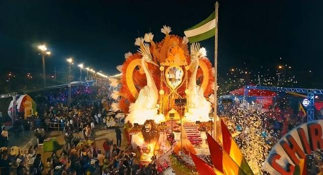
February (date changes every year)
The tropical carnival: costumed comparsas, a big parade, music day and night, and water and paint fights all over town.

March (date changes every year)
Yampara communities come down to Tarabuco in festive dress, their spurs keeping time to the dance, to celebrate the harvest and the victory of 1816.
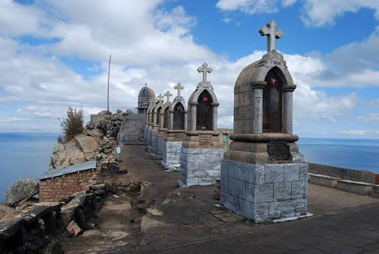
April (date changes every year)
Thousands of pilgrims walk through the night from La Paz, about 150 km, to reach the sanctuary of the Virgin of Copacabana on Good Friday.
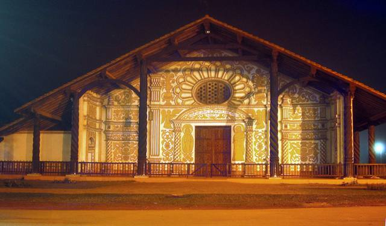
April
For ten days, over a hundred concerts of baroque and Renaissance music in the mission churches and in Santa Cruz, often free.

May (date changes every year)
La Paz's great folk parade: thousands of morenada, caporales and diablada dancers cross the city in gold-embroidered costumes.
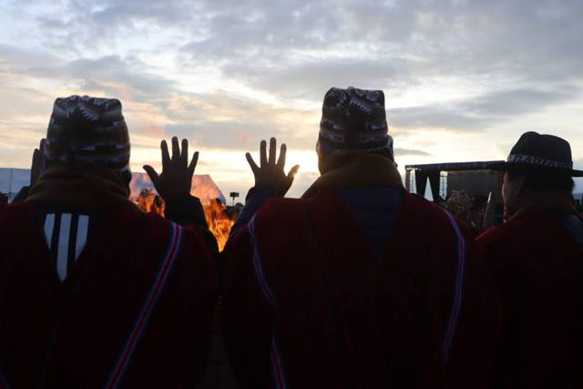
June 21
At the winter solstice, people wait for sunrise at Tiwanaku to receive its first rays with raised hands. A public holiday across the country.

July 31
The great festival of San Ignacio de Moxos: the macheteros dance in huge feather headdresses, blending Mojeño traditions and the missions' heritage.
August (date changes every year)
At the end of August, Potosí celebrates San Bartolomé and San Ignacio de Loyola with a great parade of dances from all over the country, mixing Andean and colonial traditions.
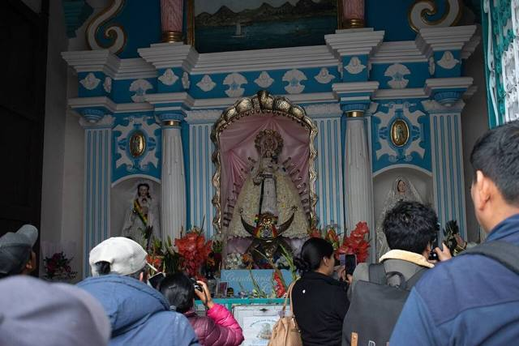
August 5
Bolivia's patron saint is celebrated with processions, dances and car blessings in front of the basilica. Another big festival on 2 February, Candlemas.
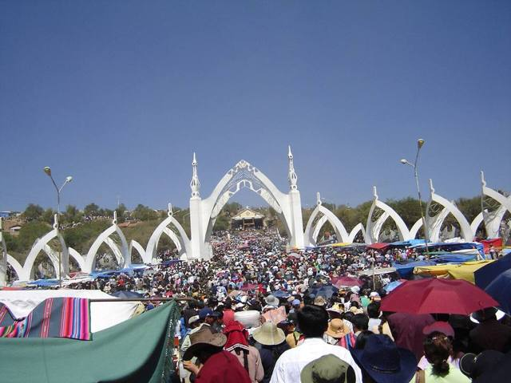
August 14
Hundreds of thousands of pilgrims and dancers in Quillacollo. On the last day, people climb to the calvary to break off stones, a symbol of prosperity.
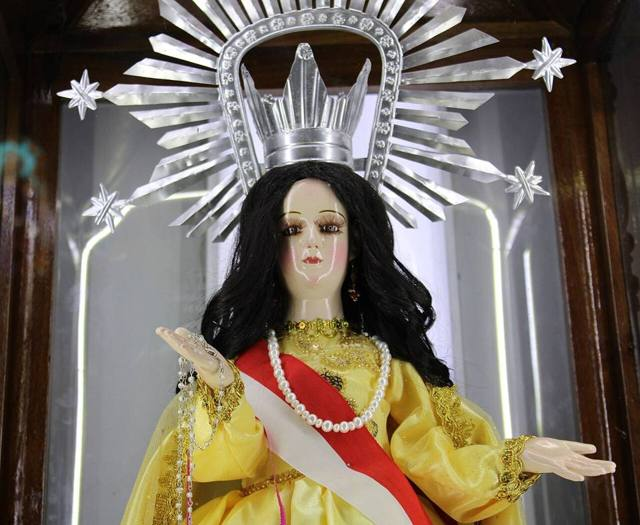
August 15
Until mid-September, thousands of pilgrims walk from Tarija, and even northern Argentina, to the sanctuary of the Virgin of Chaguaya.

August 16
Weeks of celebration for San Roque, with the chunchos in feather and ribbon costumes, the cañas (long horns) and the September processions.

September 8
Sucre's patron saint, celebrated in early September with a big folk parade through the streets of the historic centre.
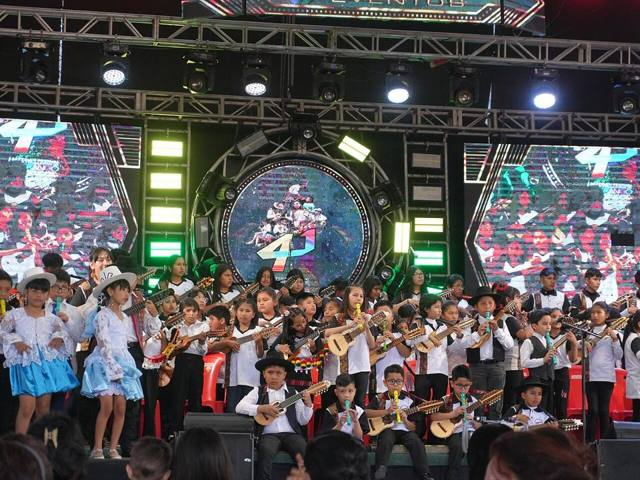
November
In early November, musicians and luthiers from all over Bolivia meet in the charango capital for competitions and concerts.
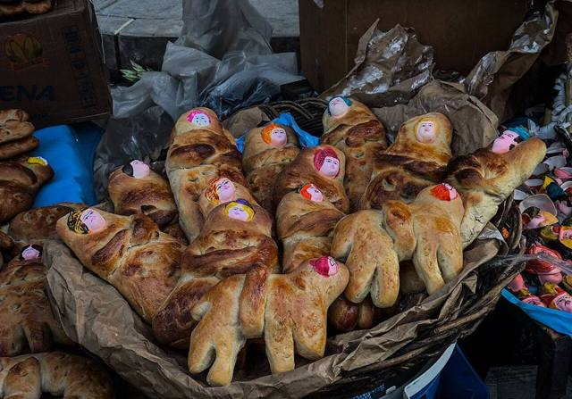
November 1
All over the country, families welcome the souls of the dead with tables full of breads shaped like ladders and people (t'antawawas), then walk them back to the cemetery.
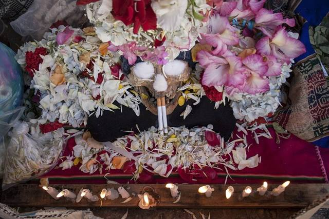
November 8
At La Paz's general cemetery, skulls decorated with flowers and sunglasses are honoured and thanked for their protection. A striking tradition, to be respected.
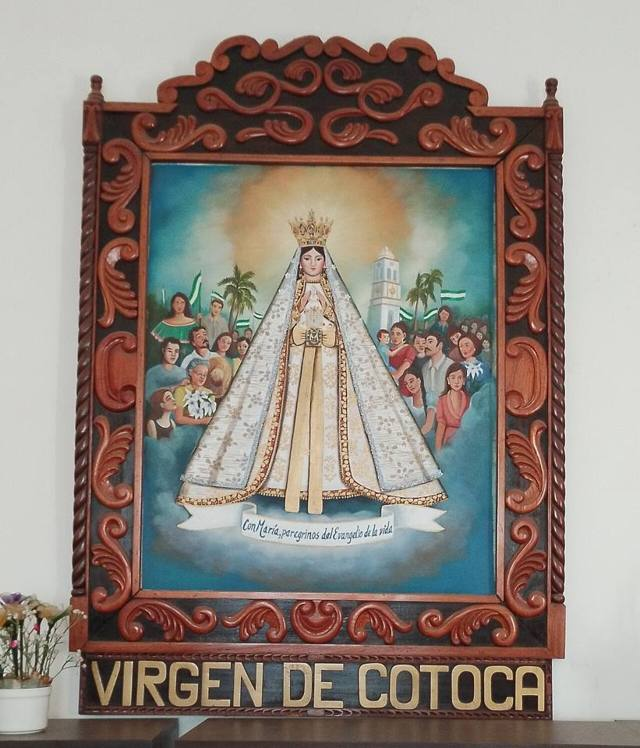
December 8
On the night of 7 to 8 December, thousands of pilgrims walk from Santa Cruz to the sanctuary of the patron saint of the people of Santa Cruz, with mass, music and a fair.


.jpg){kind=link}


.jpeg){kind=link}
_2025.jpg){kind=link}


.jpg){kind=link}